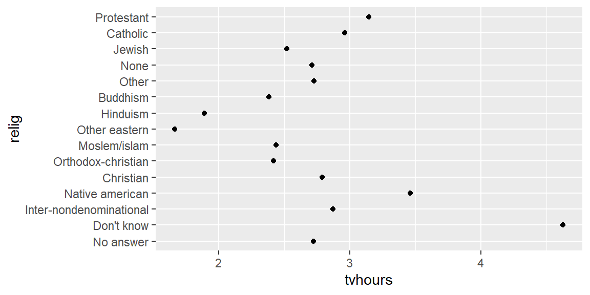
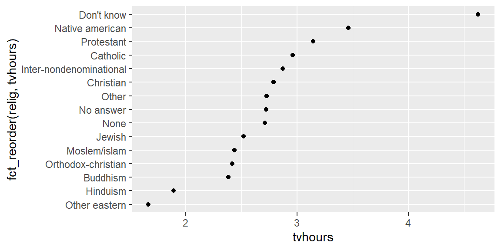
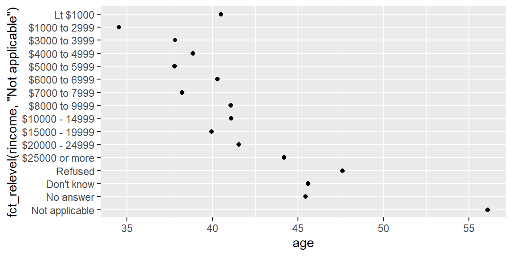

library(tidyverse)11 Session 11: Variable types III: factors
Objectives
- Understand why factors exist. Factors represent categorical variables with a fixed and known set of possible values. They prevent accidental typos and give you control over the order in which categories appear in summaries and plots. Learn why treating categories as plain strings can lead to problems, and how factors solve those problems.
- Create and inspect factors. Use
factor()orforcats::fct()to convert character vectors to factors, specify levels, and handle invalid values. Learn to inspect and summarize factor levels withlevels()andcount(). - Reorder factor levels for better visualization. Use
fct_reorder()to order levels by the values of another variable,fct_relevel()to manually move levels to the front, andfct_reorder2()when ordering line-plot legends. Explorefct_infreq()andfct_rev()to arrange levels by frequency. - Modify and collapse levels. Relabel categories with
fct_recode(), combine multiple levels withfct_collapse(), and lump rare categories into “Other” with thefct_lump_*()family, understanding what happens when categories are tied at the cutoff. - Work with ordered factors. Create ordered factors for ordinal data (such as satisfaction ratings), appreciate when an intrinsic order genuinely exists, and know why two ordered factors aren’t always comparable to each other.
- Avoid the classic factor-to-number trap. Recognize why converting a factor straight to a number almost never does what you expect.
Notes
Why factors?
Categorical variables often have a limited set of allowed values, such as months, continents, or income bands. Storing them as plain strings introduces two problems: you can type an invalid value with nothing to catch it, and the default alphabetical sorting is rarely meaningful. A factor solves both problems by enforcing a list of valid levels and giving you explicit control over their order. The months “Jan,” “Feb,” … “Dec” should appear in calendar order, not alphabetical order; converting a character vector of month names to a factor with those 12 levels, in that order, makes calendar order the default everywhere that factor is used.
Factors also matter for plotting. When you map a factor to an axis, or to color or shape, ggplot2 displays the categories in the factor’s level order. Leave a categorical variable as plain character text, and ggplot2 silently converts it to a factor using alphabetical order anyway, just without giving you any say in the matter.
Creating factors
Base R’s factor() takes a character vector and, optionally, a vector of levels.
months_raw <- c("Dec", "Apr", "Jan", "Mar")
month_levels <- c(
"Jan", "Feb", "Mar", "Apr", "May", "Jun",
"Jul", "Aug", "Sep", "Oct", "Nov", "Dec"
)
months_factor <- factor(months_raw, levels = month_levels)
months_factor[1] Dec Apr Jan Mar
Levels: Jan Feb Mar Apr May Jun Jul Aug Sep Oct Nov DecIf a value doesn’t appear in levels, factor() quietly converts it to NA. The forcats package’s fct() is a stricter alternative that raises an error instead, which catches a typo immediately rather than letting it become a silent missing value.
levels(months_factor) [1] "Jan" "Feb" "Mar" "Apr" "May" "Jun" "Jul" "Aug" "Sep" "Oct" "Nov" "Dec"
Note
col_factor() only knows the levels it has actually seen
Reading a column with col_factor(levels = NULL) builds the level list from whatever values happen to appear in that particular file. If a valid category exists but simply never shows up in this file (a product that had zero sales this month, a survey response nobody picked), it will not become a level at all, which can cause trouble later if you combine several such files and expect a consistent, complete set of levels across all of them. Specify levels explicitly whenever you know the full set of valid categories ahead of time.
The gss_cat dataset, bundled with forcats, contains survey responses with several factor columns such as race, marital, rincome, and partyid, and is a convenient way to practice summarizing and visualizing real categorical data.
gss_cat |> count(race)# A tibble: 3 × 2
race n
<fct> <int>
1 Other 1959
2 Black 3129
3 White 16395Reordering levels
The alphabetical or import-order default for factor levels is often arbitrary, and reordering can make a plot far easier to read. fct_reorder() takes the factor to reorder and a numeric vector whose values determine the new order.
relig_summary <- gss_cat |>
group_by(relig) |>
summarise(tvhours = mean(tvhours, na.rm = TRUE), .groups = "drop")
# without reordering, the default level order controls the y-axis
ggplot(relig_summary, aes(x = tvhours, y = relig)) +
geom_point()
# reordered by tvhours, the pattern jumps out immediately
ggplot(relig_summary, aes(x = tvhours, y = fct_reorder(relig, tvhours))) +
geom_point()
Use fct_relevel() to manually move one or more levels to the front, for example to keep a special category like “Not applicable” visually separate from the rest regardless of its value:
rincome_summary <- gss_cat |>
group_by(rincome) |>
summarise(age = mean(age, na.rm = TRUE), .groups = "drop")
ggplot(rincome_summary, aes(x = age, y = fct_relevel(rincome, "Not applicable"))) +
geom_point()
For line plots with several categories, fct_reorder2() orders the legend to match the y-value at the largest x-value, so the legend order matches the visual order of the lines where they end. fct_infreq() orders levels by frequency, and fct_rev() reverses whatever order is currently in place; combining them is a quick way to sort a bar chart from most to least (or least to most) common category.
Modifying levels
Reordering changes the order of levels; sometimes you need to change the labels themselves, or combine several levels into one. fct_recode() renames levels, with the new name on the left and the existing name on the right.
gss_cat |>
mutate(
partyid = fct_recode(partyid,
"Republican, strong" = "Strong republican",
"Republican, weak" = "Not str republican",
"Independent, near rep" = "Ind,near rep",
"Independent, near dem" = "Ind,near dem",
"Democrat, weak" = "Not str democrat",
"Democrat, strong" = "Strong democrat"
)
) |>
count(partyid)# A tibble: 10 × 2
partyid n
<fct> <int>
1 No answer 154
2 Don't know 1
3 Other party 393
4 Republican, strong 2314
5 Republican, weak 3032
6 Independent, near rep 1791
7 Independent 4119
8 Independent, near dem 2499
9 Democrat, weak 3690
10 Democrat, strong 3490
Warning
fct_recode() warns, but only warns, about a typo
If the name on the right of a fct_recode() pair doesn’t match an existing level exactly, forcats issues a warning like “Unknown levels in f: …” rather than an error. The recoding for that one pair silently does nothing (that level keeps its original name), while everything else in the call still runs. Read the warning; it is easy to miss in a long script and easy to mistake for harmless noise.
To collapse multiple categories into a smaller set, fct_collapse() takes new category names paired with a vector of existing levels to combine into each one.
gss_cat |>
mutate(
partyid = fct_collapse(partyid,
other = c("No answer", "Don't know", "Other party"),
rep = c("Strong republican", "Not str republican"),
ind = c("Ind,near rep", "Independent", "Ind,near dem"),
dem = c("Not str democrat", "Strong democrat")
)
) |>
count(partyid)# A tibble: 4 × 2
partyid n
<fct> <int>
1 other 548
2 rep 5346
3 ind 8409
4 dem 7180When a factor has many rare categories, the fct_lump_*() family groups the smallest ones into “Other” automatically. fct_lump_n(x, n) keeps the n most common categories; related variants fct_lump_min() and fct_lump_prop() lump based on a minimum count or a minimum proportion instead of a fixed number of categories to keep.
gss_cat |>
mutate(relig = fct_lump_n(relig, n = 10)) |>
count(relig, sort = TRUE)# A tibble: 10 × 2
relig n
<fct> <int>
1 Protestant 10846
2 Catholic 5124
3 None 3523
4 Christian 689
5 Other 458
6 Jewish 388
7 Buddhism 147
8 Inter-nondenominational 109
9 Moslem/islam 104
10 Orthodox-christian 95Ordered factors
Some categories have an intrinsic order, such as “low,” “medium,” “high,” or a 1 to 5 rating scale. Create an ordered factor with ordered = TRUE in factor(), or with forcats::fct()’s ordered argument. Ordered factors print with < between levels to make the order visible, and support </> comparisons the way numbers do (with an important caveat covered in Example 10.4). Think carefully before imposing an order: a variable like region has categories, but no natural ranking, and forcing an arbitrary order onto it is misleading rather than helpful.
Fringe cases and common pitfalls
ExampleExample 10.1
Converting a factor straight to a number gives you the level’s position, not the label’s value.
f <- factor(c("10", "20", "5"))
levels(f) # sorted alphabetically as text: "10", "20", "5"[1] "10" "20" "5" as.numeric(f) # the *position* of each value within that level order[1] 1 2 3as.numeric() on a factor never looks at the text of the label at all; it returns the integer code R uses internally to store that level. Here the levels happen to sort as "10", "20", "5" (ordinary alphabetical string order, not numeric order), so as.numeric() returns 1, 2, 3, three numbers that have nothing to do with the original 10, 20, 5. The fix is to go through the label’s text first: as.numeric(as.character(f)), or readr::parse_number(as.character(f)) if the labels have extra formatting to strip. This single line, as.numeric(some_factor), is probably the most common way real R analyses get silently corrupted numbers.
ExampleExample 10.2
Filtering out every row of a level doesn’t remove that level from the factor.
df <- tibble(grp = factor(c("a", "b", "c", "a")))
filtered <- df |> filter(grp != "c")
levels(filtered$grp) # "c" is still listed as a valid level[1] "a" "b" "c"table(filtered$grp) # base R's table() shows it, with a count of 0
a b c
2 1 0 count(filtered, grp) # dplyr's count() quietly hides empty levels by default# A tibble: 2 × 2
grp n
<fct> <int>
1 a 2
2 b 1count(filtered, grp, .drop = FALSE) # ask explicitly, and the phantom level reappears# A tibble: 3 × 2
grp n
<fct> <int>
1 a 2
2 b 1
3 c 0A factor’s levels are metadata about what values are allowed, separate from which rows happen to be present, so removing every row with grp == "c" does not update levels(). Depending which tool you reach for next, that phantom level either quietly disappears (count()‘s default) or quietly reappears (table(), or count(..., .drop = FALSE)), which can make two summaries of the exact same filtered data look inconsistent with each other. droplevels() (or forcats’ fct_drop()) removes any level with zero remaining observations, and is worth calling right after a filter() if you plan to rely on levels() downstream.
ExampleExample 10.3
fct_lump_n() can hand back more categories than you asked for.
x <- factor(c(rep("a", 3), rep("b", 3), rep("c", 2), rep("d", 2), rep("e", 1)))
table(x)x
a b c d e
3 3 2 2 1 table(fct_lump_n(x, n = 3))
a b c d Other
3 3 2 2 1 Categories c and d are tied for third place with 2 observations each, so asking for the top 3 categories returns 4 non-“Other” categories, not 3, because fct_lump_n() keeps every category tied at the cutoff rather than arbitrarily breaking the tie for you. This is the same kind of tie behavior you saw with slice_max() back in Session 6: whenever a function’s job is to keep “the top n,” check whether ties are possible in your data before assuming the output has exactly n rows or categories.
ExampleExample 10.4
Two ordered factors that look compatible can still refuse to compare.
o1 <- factor(c("low", "high"), levels = c("low", "medium", "high"), ordered = TRUE)
o2 <- factor(c("low", "high"), levels = c("high", "low"), ordered = TRUE)
o1 < o2Error in Ops.ordered(o1, o2): level sets of factors are differentBoth o1 and o2 are ordered factors built from sensible-looking level sets, but R refuses to compare them at all, because their level sets are not identical (o2 is missing "medium", and even the shared levels are listed in a different order). Ordered comparisons are only meaningful when both sides agree on the complete, ordered list of possible categories; if you need to compare ordered factors that came from different sources, make sure both are built from the exact same levels vector, in the exact same order, before comparing them.
Recap
| Term | Definition |
|---|---|
| Factor | A variable with a fixed, known set of valid values (levels), stored internally as integer codes paired with level labels. |
fct() |
Like factor(), but errors on a value not in levels instead of silently producing NA. |
fct_reorder() / fct_relevel() |
Reorder a factor’s levels by another variable’s values, or manually move specific levels to the front. |
fct_infreq() / fct_rev() |
Order levels by frequency, or reverse the current level order. |
fct_recode() |
Renames specific levels; silently no-ops (with only a warning) on a level name that doesn’t exist. |
fct_collapse() |
Combines several existing levels into one new level. |
fct_lump_n() |
Keeps the n most common levels and lumps the rest into “Other”; can keep more than n if there’s a tie at the cutoff. |
droplevels() / fct_drop() |
Removes any level with zero remaining observations, typically used after filtering. |
as.numeric() on a factor |
Returns the integer position of each value’s level, not the numeric value of its label; use as.numeric(as.character(x)) instead. |
| Ordered factor | A factor with a meaningful ranking between levels; comparable to another ordered factor only if both share identical levels in identical order. |
Check your understanding
NoteProblems
- Why is storing a categorical variable as a factor usually better than storing it as a plain character vector?
- A colleague runs
as.numeric()on a factor column of survey years (like"2019","2020","2021") and gets1,2,3instead of the actual years. What went wrong, and how do they get the real years back? - You filter a factor column down to just two of its five original levels.
count()shows only two rows, buttable()on the same column shows all five. Explain why these two summaries disagree, and how you would makelevels()match what you actually have left. - What does
fct_lump_n(x, n = 5)guarantee, and what does it not guarantee, about the number of categories in its result? - Two ordered factors both look like a “low/medium/high” scale, but comparing them with
<throws an error. What is the most likely cause?
TipSolutions
A factor enforces a fixed list of valid values, so a typo becomes an immediately visible problem (a stray
NA, or an outright error withfct()) instead of silently creating a new, subtly misspelled category. A factor also carries an explicit level order, which controls sorting and how the variable appears in plots, instead of relying on default alphabetical order.as.numeric()on a factor returns the integer code behind each level (its position in the level order), not the number represented by the label’s text. The fix is to convert through the character representation first:as.numeric(as.character(year_factor)), orparse_number(as.character(year_factor))if the labels have any extra formatting.A factor’s
levels()lists every value that is allowed, independent of which rows are actually present, so filtering out three levels’ worth of rows does not remove those levels from the factor’s metadata.count()quietly drops levels with zero remaining rows by default, whiletable()still shows them (with a count of 0), which is why the two disagree.droplevels()(or forcats’fct_drop()) updateslevels()to match what is actually left in the data.fct_lump_n(x, n = 5)guarantees that the result keeps at most the 5 most common categories as their own named levels, with everything else grouped into “Other.” It does not guarantee exactly 5 non-“Other” categories: if there is a tie in count at the 5th-place cutoff, every tied category is kept, so the result can have more than 5.The two ordered factors almost certainly don’t share the exact same set of levels in the exact same order. R only allows
</>comparisons between ordered factors whose level sets match exactly, including the order of levels not directly involved in that particular comparison, so even a small difference (an extra level, a missing level, or the same levels listed in a different order) causes the comparison to fail with an error.